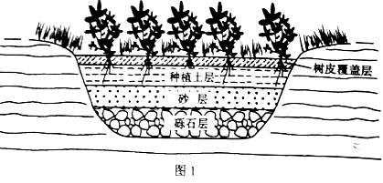
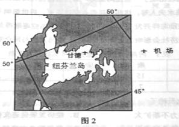
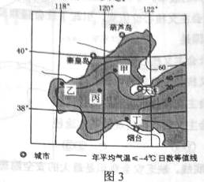
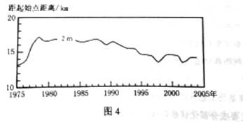
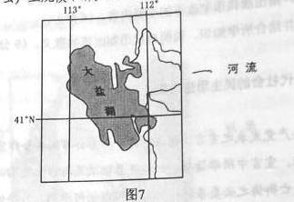
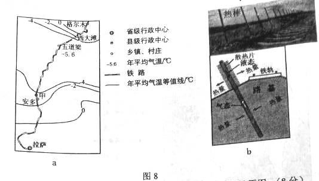
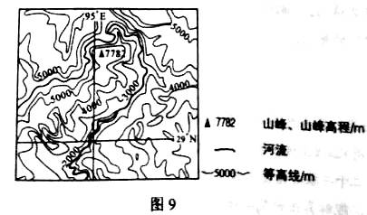
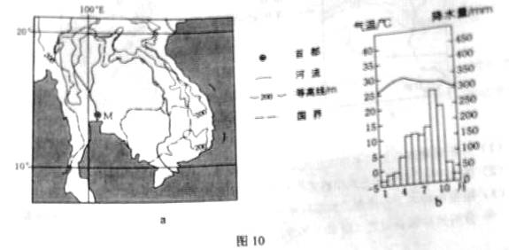

None - Fade - Slide - Convex - Concave - Zoom
选择班级
幻灯片样式
Black (default) -
White -
League -
Sky -
Beige -
Simple
Serif -
Blood -
Night -
Moon -
Solarized
雨水花园是一种模仿自然界雨水汇集、渗漏而建设的浅凹绿地，主要用于汇聚并吸收来自屋顶或地面的雨水，并通过植物及各填充层的综合作用使渗漏的雨水得到净化。净化后的雨水不仅可以补给地下水，也可以作为城市景观用水、厕所用水等。图1示意雨水花园结构。据此完成1-3题。
1.铺设树皮覆盖层的主要目的是：
A.为植物提供养分
B.控制雨水渗漏速度
C.吸附雨水污染物
D.保持土壤水分
2.对下渗雨水净化起主要作用的填充层是
A. 树皮覆盖层和种植土层
B. 种植土层和砂层
C. 砂层和砾石层
D. 树皮覆盖层和砾石层
3.雨水花园的核心功能是
A. 提供园林观赏景观
B. 保护生物多样性性
C. 控制雨洪和利用雨水
D. 调节局地小气候
甘德国际机场（图2）曾是世界上最繁忙的航空枢纽之一，当时几乎所有横跨北大西洋的航班都要经停该机场补充燃料.如今，横跨北大西洋的航班不再需要经停此地.据此完成4～6题.
4.导致甘德国际机场成为世界上最繁忙机场的主要因素是
A. 位置
B. 经济
C. 地形
D. 人口
5.甘德国际机场失去国际航空枢纽地位的主要原因是
A. 地区经济发展缓慢
B. 横跨北大西洋航班减少
C. 飞机飞行成本降低
D. 飞机制造技术进步
6.一架从甘德机场起飞的飞机以650千米/小时的速度飞行，1小时候后该飞机的纬度位置可能为
A. 66.5°N
B. 60°N
C. 53°N
D. 40°N
海冰含盐量接近淡水，适当处理后可作为淡水资源。图3示意渤海及附近区域年平均气温≤-4℃日数的分布。据此完成7-9题。
7．图示甲、乙、丙、丁四海域中，海冰厚度最大的是（ ）
A、甲
B、乙
C、丙
D、丁
8、下列城市附近海域，单位面积海冰资源最丰富的是（ ）
A、葫芦岛
B、秦皇岛
C、大连
D、烟台
9、推测目前没有大规模开采渤海海冰的原因是（ ）
A、资源量不足
B、破坏环境
C、成本过高
D、市场需求不足
图4示意在黄河三角洲近岸海域的某监测剖面上，不同年份水深2米的位置与监测起始点的距离。起始点是位于海岸一侧的固定点。读图4，完成10-11题。
10、1975~2004年，该剖面近岸海域海底侵蚀、淤积的变化趋势是（ ）
A、持续淤积
B、先侵蚀、后淤积
C、持续侵蚀
D、先淤积、后侵蚀
11、推测1992~1997年期间（ ）
A、黄河流域年均降水量增加
B、黄河入海年径流量减少
C、黄河流域植被覆盖率降低
D、黄河沿岸农业灌溉面积减少
36、（22分）阅读图文材料，卤虫生存于高盐海域，以藻类为食，是水产养殖的优质活体饵料，也是候鸟的食物来源，美国大盐湖（图7）属内陆沿湖，卤虫资源丰富，20世纪50~70年代，大盐湖卤虫产业规模小，产品需低温运输，主要用于喂养观赏鱼类，80年代以来，随着水产养殖业快速发展，大盐湖卤虫产业规模不断扩大。
(1).分析大盐湖盛产卤虫的原因。（6分）
属于内陆盐湖，为高盐水域。（3分）注入该湖的河水带来大量的营养物质，适合藻类等卤虫饵料的生长。（3分）
（2）说明早年卤虫产业规模较小的原因。（4分）
（2）运输成本高（需低温运输）；（2分）（主要用于喂养观赏鱼），市场需求量小。（2分）
（3）推测20世纪80年代以来，水产养殖业快速发展的原因及其对大盐湖卤虫产业发展的影响。（8分）
（3）原因：海洋渔业产量减少；（2分）市场需求增大；（2分）近海水产养殖技术提高。（2分）影响：对卤虫需求量增加，（促进了大盐湖卤虫产业发展）。（2分）
（4）你是否赞同继续在大盐湖发展卤虫捕捞业。请表明态度并说明理由。（4分）
赞成：卤虫资源丰富，市场需求大，经济价值高，技术成熟，增加就业等。（4分） 不赞成：让卤虫自然生长，维护生物链的稳定，保护湿地，保护生物多样性等。
阅读图文材料，完成下列要求。（24分）
37. 多年冻土分为上下两层，上层为夏季融化，冬季冻结的活动层，下层为多年冻结层。我国的多年冻土分布主要分布于东北高纬度地区和青藏高原高海拔地区。东北高纬地区多年冻土南界的年平均气温在-1℃~1℃，青藏高原多年冻土下界的年平均气温约为—3.5℃~—2℃。 由我国自行设计、建设的青藏铁路格（尔木）拉（萨）段成功穿越了约550千米的连续多年冻土区，是全球目前穿越高原、高寒及多年冻土地区的最长铁路。
多年冻土的活动层反复冻融及冬季不完全冻结，会危及铁路路基。青藏铁路建设者创造性地提出了“主动降温、冷却路基、保护冻土”的新思路，采用了热棒新技术等措施。图8a示意青藏铁路格拉段及沿线年平均气温的分布，其中西大滩至安多为连续多年冻土分布区。图8b为青藏铁路路基两侧的热棒照片及其散热工作原理示意图。热棒地上部分为冷凝段，地下部分为蒸发段，当冷凝段温度低于蒸发段温度时，蒸发段液态物质汽化上升，在冷凝段冷却成液态，回到蒸发段，循环反复。
（1）分析青藏高原形成多年冻土的年平均气温比东北高纬度地区低的原因。（8分）
青藏高原纬度低，海拔高，太阳辐射强；（3分）（东北高纬地区年平均气温低于—1℃～1℃，可以形成多年冻土。）青藏高原气温年较差小，当年平均气温同为—1℃～1℃时，冬季气温高，冻结厚度薄，夏季全部融化，不能形成多年冻土。（5分）
（2）图8a所示甲地比五道梁路基更不稳定，请说明原因。（8分）
（2）甲地年平均气温更接近0℃，受气温变化的影响，活动层更频繁地冻融，（冻结时体积膨胀，融化时体积收缩，）危害路基；（4分）甲地年平均气温高于五道梁，夏季活动层厚度较大，冬季有时不能完全冻结，影响路基稳定性。（4分）
（3）根据热棒的工作原理，判断热棒散热的工作季节（冬季或夏季）简述判断依据，分析热棒倾斜设置（图8b）的原因。（8分）
冬季。（2分） 依据：冬季气温低于地温，热棒蒸发段吸收冻土热量，（将液态物质汽化上升，与较冷的地上部分管壁接触，凝结，释放出潜热，）将冻土层中的热量传送至地上（大气）。（3分） 热棒倾斜设置的原因：使热棒能深入铁轨正下方，保护铁轨下的路基（多年冻土）。
42. (10分)旅游地理
近年来，滑雪、登山、徒步等户外活动渐成一种休闲和时尚的生活方式。几位户外运动爱好者拟于8月前往图9所示区域进行峡谷徒步旅游。
42.分析该时段在该地区峡谷徒步旅游可能遭遇的风险。
该峡谷地形复杂、植被茂密、人烟稀少，易迷路；（2分）海拔高、缺氧，易发高原反应；（2分）8月份降水多，易遭遇洪水；（2分）山高谷深，易遭遇崩塌、泥石流等地质灾害；（2分）河谷蚊虫较多，易受蚊虫侵扰。（2分）
43，（10分）自然灾害与防治
图10a示意某地区地形及M城位置，图10bM城年内各月气温及降水量。2011年该地区9、10两月降水量远超常年。M城被水淹80多天，造成严重的经济损失。
分析M城水患严重的自然原因
M城靠近河口，距海近，地势低平。（4分）全流域径流均汇集到M城附近入海。（2分）降水量大且集中。（2分）河水常受海潮顶托，下泄缓慢。（2分）
44、（10分）环境保护
近年来，我国道路施工愈加注重保护环境，喀斯特地区土层薄，保护土壤尤为重要。在南方喀斯特地区修建公路，开挖石料和堆放弃料前后需采取必要的措施，以在工程结束后，仍在原地维持土壤的生产功能。
指出为达到保护土壤的目的，在南方喀斯特地区开挖石料和堆放弃料前后应采取的措施，并简述理由。
措施：之前，将土壤移走，集中堆放并作保护措施（四周围挡，表面覆盖）。（3分）之后，将土壤再覆盖在石料开挖场或弃料堆放场的表面，并采取防止土壤流失的措施。（3分） 理由：喀斯特地区土层薄，易被移走；南方地区雨水多，土壤易流失，需保护。（4分）